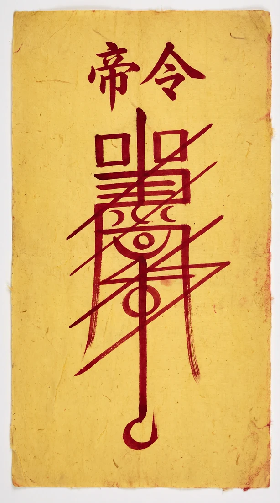

오 늘 의 처 방
말과 재주가
술술 풀리는 날이다.
미뤄둔 말, 오늘 꺼내라.
오늘은 식상(食傷)의 날. 표현이 먹히는 날이라 부탁·제안·고백처럼 말로 하는 일에 운이 붙는다.
다만 입이 가벼워지기 쉬우니, 남의 이야기는 오늘만 삼켜라.
귀곡에게 더 자세히 묻기 ⟶

이번 주의 부적 — 팔자에서 태어난 문양은 사람마다 다르게 그려진다.
命 — 타고난 것
01
귀곡의 명부본편저승사자가 여덟 장으로 읽어주는 심층 사주. 혼·인연·곳간·흐름.
읽기 ⟶
02
사주팔자만세력 절입시각까지 계산한 내 원국 풀이.보기 ⟶
03
나만의 부적팔자에서 생성되는 단 하나의 문양. 저장해 지닌다.받기 ⟶
04
명부 대조부적 두 장을 겹쳐 두 사람의 명을 맞춰본다.대조 ⟶
心 — 나를 아는 법
05대환장 MBTI16개로는 부족한 유형⟶
06연애세포지금 내 연애 온도⟶
07스트레스 몬스터내 안에 사는 것⟶
08프로필 카드흩어진 결과 한 장으로⟶
戲 — 심심할 때
09마음 배달못 한 말을 링크로⟶
10고블럽 키우기기분 먹고 자라는 것⟶
11결정의 신못 정하겠거든⟶
12미니 놀이터룰렛·질문카드·팡팡⟶